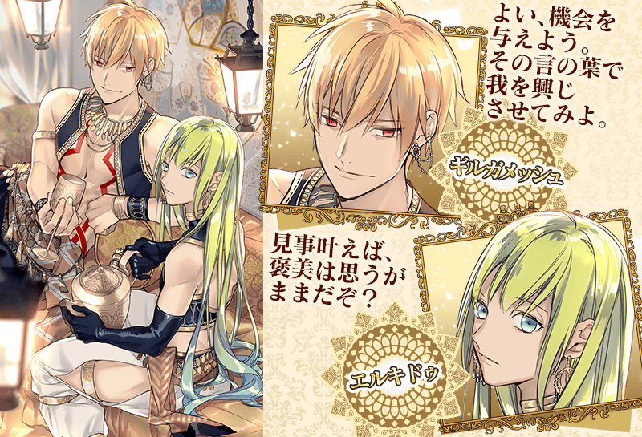
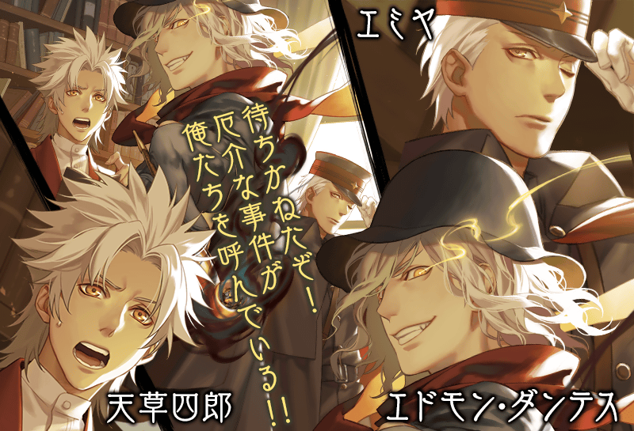
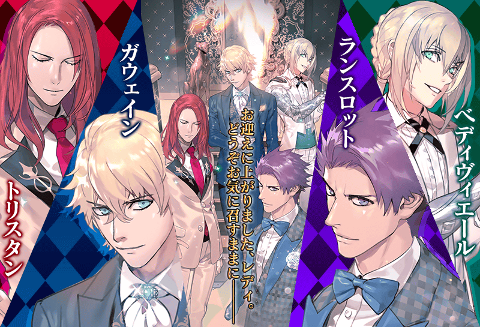
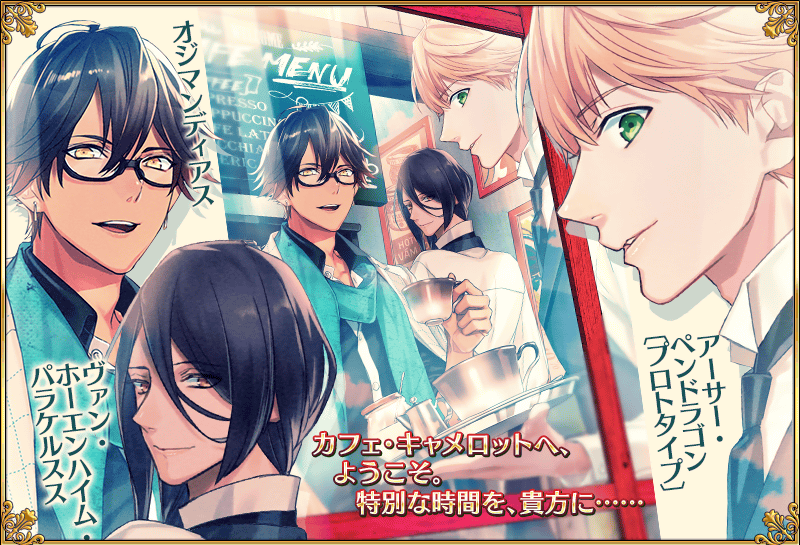
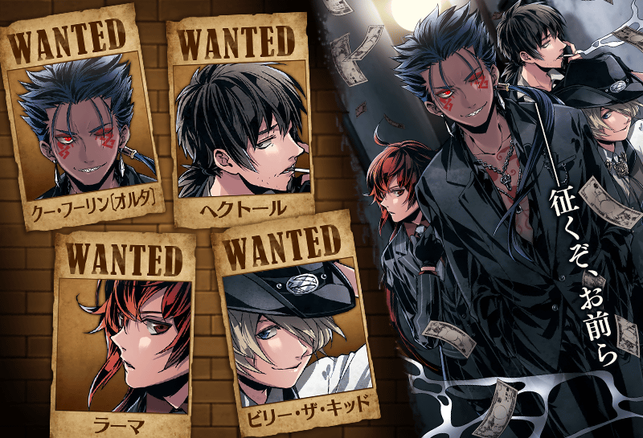
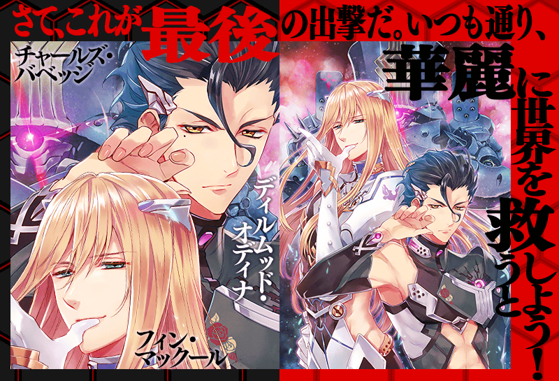
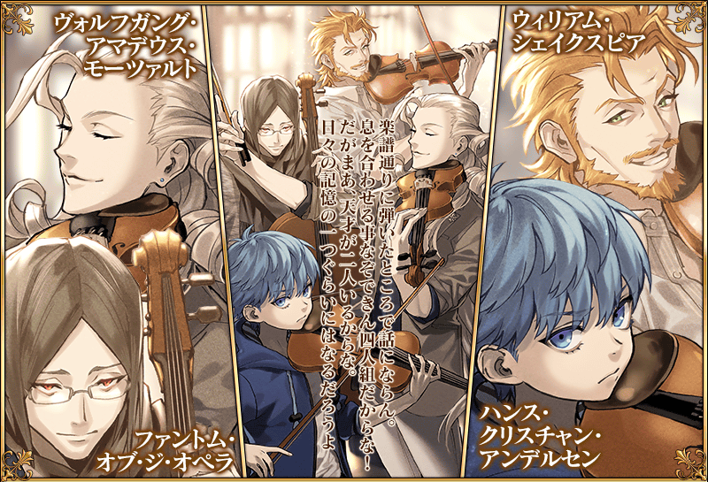
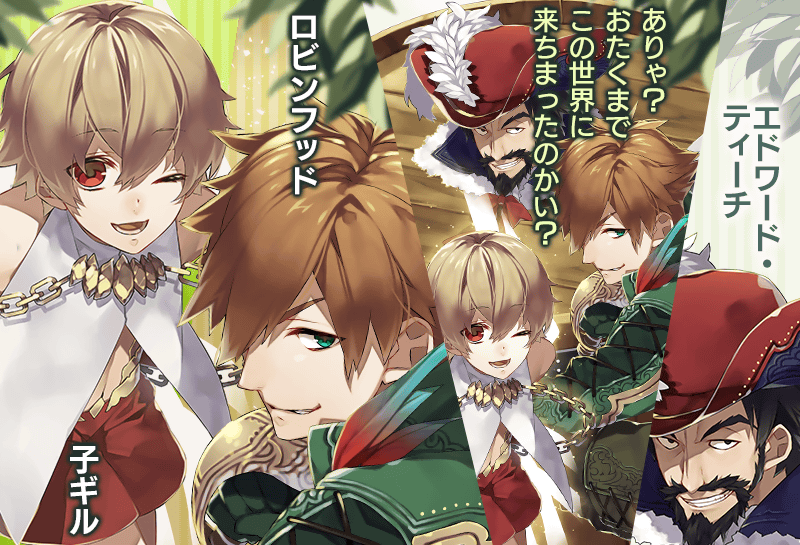
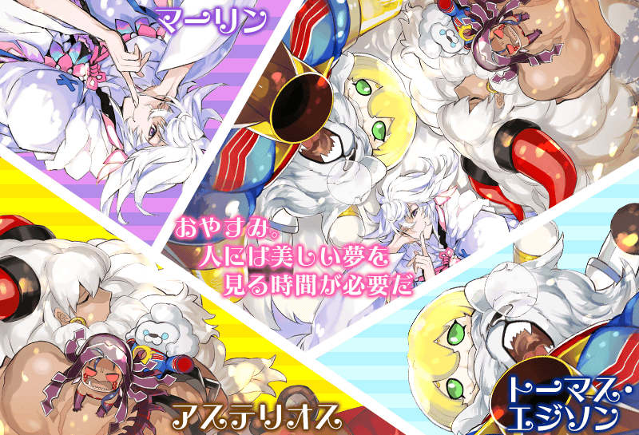
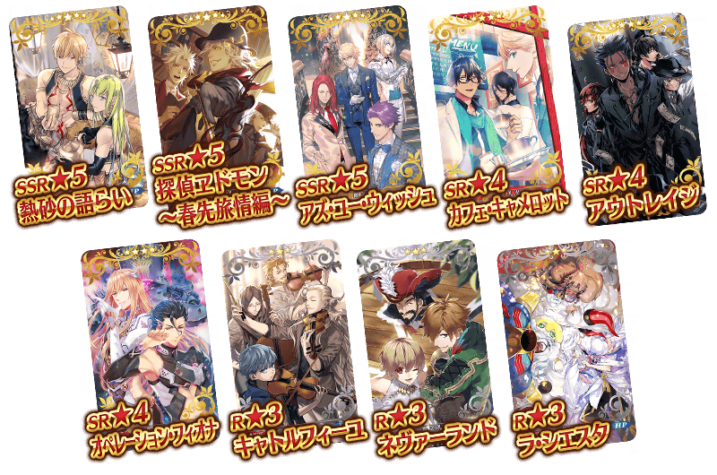

         ◆宣傳活動舉辦期間◆2017年3月8日(三) 16:00～3月22日(三) 13:59 ◆交換方法◆2017年3月8日 16:00以後，最初進行登入時給予「CBC2017邀請函(CBC2017特別招待状)」至禮物箱。 從禮物箱領取「CBC2017邀請函」後，在達文西工作房內的「迦勒底男孩收藏2017交換」中，能從期間限定概念禮裝9張之中交換喜歡的1張。 ※自3月8日(三) 16:00可交換。 ※交換後的概念禮裝會發送到禮物箱。 ※交換後「CBC2017邀請函」會消失。 ※就算沒交換的話，在宣傳活動結束後，「CBC2017特別邀請函」也會消失。 ◆交換對象◆ 